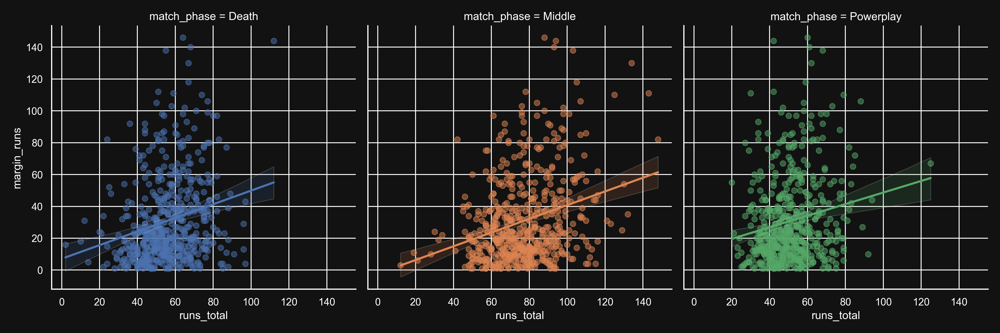
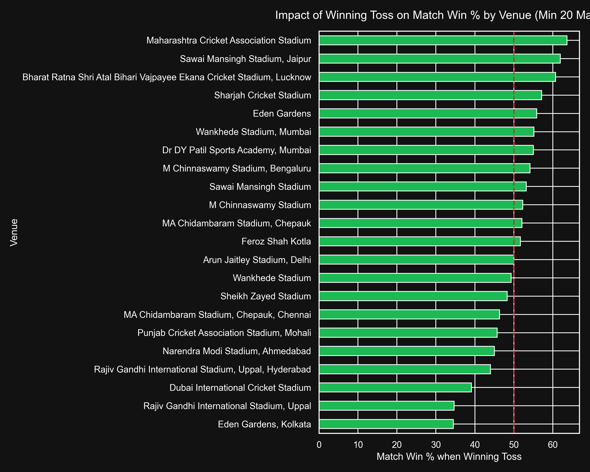

1,200+ official Cricsheet files
Zero human error
Optimized 290k+ row dataset
Granular tracking of Powerplay, Middle, and Death overs.
A proprietary rolling calculation of consecutive dot balls faced.

Captains following the default T20 chasing meta in Dubai are statistically handicapping their own teams.
